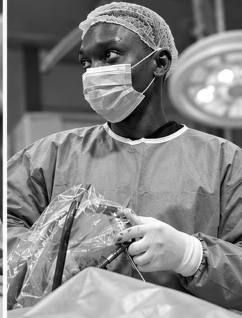

Digital twins for endoscopic surgery
Exploring patient-specific digital models to support surgical planning, simulation, and decision-making in endoscopic spine surgery.
I’m Israel Oheji ABI, an orthopaedic clinician, researcher and educator exploring how data and artificial intelligence can improve healthcare.

My work connects orthopaedic and trauma care with public health, research, and the practical use of digital technology.
Based at the National Orthopaedic Hospital, Dala–Kano, I bring a clinical perspective to questions about musculoskeletal outcomes, access to care, and the responsible adoption of AI.
At Clinix AI, I explore the design of digital health tools suited to resource-limited settings. My interests connect clinical practice, research, education, and responsible innovation.
Technical work grounded
in clinical questions.
An interactive view of pain, disability, hospital stay, complications, and follow-up across 240 fictional spine surgery patients.
A Python project exploring laboratory-based prediction with logistic regression and random forest.
My research interests connect orthopaedic surgery,
digital health, and trustworthy healthcare AI.
Exploring patient-specific digital models to support surgical planning, simulation, and decision-making in endoscopic spine surgery.
Studying surgical techniques, patient selection, functional recovery, and outcomes following minimally invasive procedures.
Developing and evaluating reliable, explainable, and clinically useful AI tools for predicting outcomes and supporting musculoskeletal care.
Exploring electronic health records, longitudinal clinical data, and decision-support tools that fit healthcare workflows.
Investigating human oversight, accountability, equity, and policies that support safe and responsible healthcare AI, particularly in resource-limited settings.
I teach research methodology and orthopaedic pathology at the School of Orthotics and Prosthetics, National Orthopaedic Hospital, Dala–Kano.
My educational interests include clear clinical reasoning, practical research methods, and approachable introductions to data science for healthcare professionals.
Interested in clinical research, health AI,
digital health, or educational collaboration?